Relative, Absolute, Fixed Positioning

FEBRUARY 29, 2024
FEBRUARY 29, 2024
position is a CSS (Cascading Style Sheets) element, and as
the name of the element suggests, position specifies how
the element should be positioned in a document.
Before looking at position elements, I think it is important to understand the normal flow of a document.
An HTML document without any CSS is rendered on a browser by the order
that the HTML is written. HTML elements such as
<div></div> ,
<li></li>,
<p></p> (and many more) are
block elements which means it's space that it takes up
on a webpage always starts on a new line and fills up the horizontal
space from left to right on a webpage (full width of the window). Hence,
a block element written on HTML followed by another
block element, the normal flow is from top to down.
While the HTML elements of
<a></a>,
<span></span>,
<em></em> (and many more as well) are
inline which means that they are ordered from left to
right (like reading ordinary text). The normal flow for
inline elements is left to right, and down.
HTML elements are given a CSS of position: static by
default.
This means that elements appear as they are written in the HTML document.
For example:
HTML
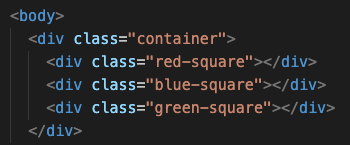CSS
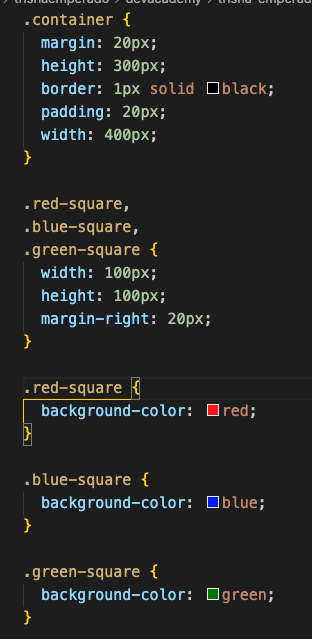Outcome:
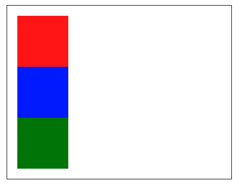
Notice how the coloured squares are positioned from top to down as they
are a
<div>
HTML elements which means they are block. These squares
are given the CSS default position of static - as they
are positioned according to the Normal Flow of the document.
Relative position means “relative to itself” - think of it as it needs to have an “anchor” so it knows where it should move in relation to. I will explain further…
If you just give an element
position: relative
this will have no effect on the position, and essentially be left as
static . But if you give it another position
attribute, eg left: 20px , then the element will position
away from itself to the left RELATIVE from where it should normally be.
The offset of the position is based on the values of
top, right, bottom,
left, and the offset does not affect the position of the
other elements. The element retains its flow in the document.
This is useful position trick for when you want to manipulate certain elements position on the page.
For example, I will change the position CSS element to
relative for the blue square and I will change the offset
value for top and left to see how this changes
the position on the webpage:
CSS
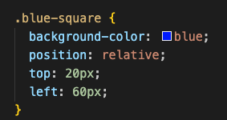Outcome:
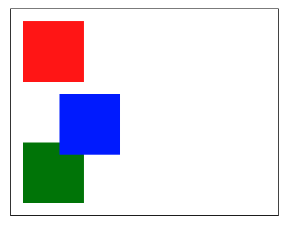I don't know about you, but seeing the outcome first got me confused! My expectation of the position was that it would move 20px up and 60px left… NOOOOO. I was very wrong. Let's look at this further…
Just remember how it looked:
before:
and after:
When we applied
position:relative , top: 20px ,
left: 60px... we are saying that from it's normal position
we specified that it will move AWAY from the top by 20px (hence moved
down by 20px). We also specified that it will move AWAY from the left
60px (hence moved to the right).
Notice how the other square's positions did not get affected.
Absolute position means you can place the element any where you want it
by using the offset data values: top, right,
bottom, left The element is removed from the
Normal Flow of the document which means that there is no space for the
element in the page (like the element is no longer there).
The value that you set for your position will be in relation to the next parent element. If there is no parent element, then it will be placed in accordance to the HTML element and be placed in relation to the page itself.
For example, let's change the position for the blue square:
CSS
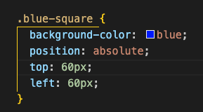Outcome

What do we notice here?
Let's breakdown further how our CSS changes lead to this outcome:
This absolute element has no relationship with the
container, therefore there is no closest relative positioned parent.
Hence, it is positioned within the viewport (webpage). Thus value of
top: 60px and left: 60px means that it will
move 60px AWAY from the left-side of viewport (hence moved to the right
of the viewport) AND it will also move 60px AWAY from the top of the
viewport (hence moved the blue square down from the viewport).
To set the relationship between the blue square and container, we need
to apply position: relative to the container. This will
lead to:
CSS
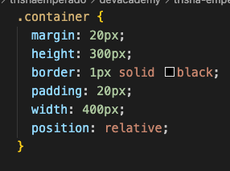Outcome:
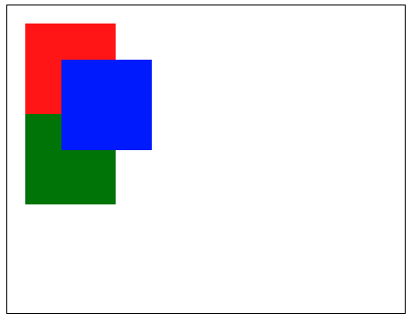Notice how the blue square has moved in relation to the black border (container).
Fixed position means it is positioned relative to the viewport/the browser window itself, hence it does not respect any relative parents. Like absolute positioning - fixed position is removed from the normal document flow. The fixed element will be positioned where it is when the page is scrolled because the viewport doesn’t change when the window is scrolled. For example, this is useful for a navigation bar that you want to be visible while a viewer scrolls the page.
For example:
CSS
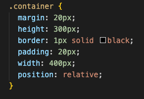 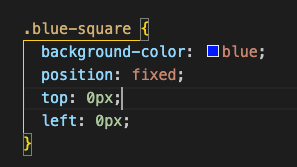Outcome
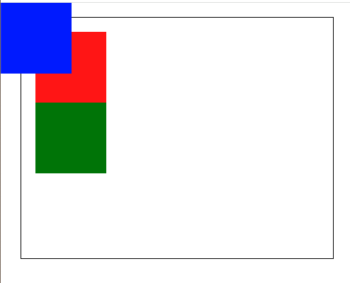
Notice how although the container has
position: relative specified in the CSS, the blue square is
positioned relative to the viewport because the blue square is specified
by position:fixed. If I were to scroll this webpage down,
the red and green squares will disappear as it is out of the webpage
view, HOWEVER the blue square will remain in its position due to the
fixed positioning we gave it.